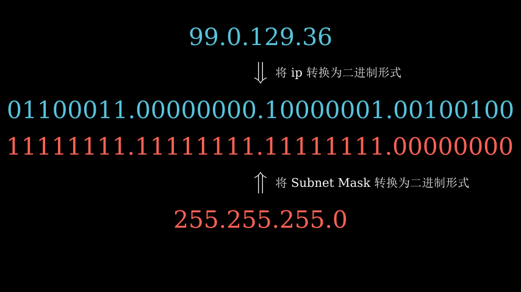
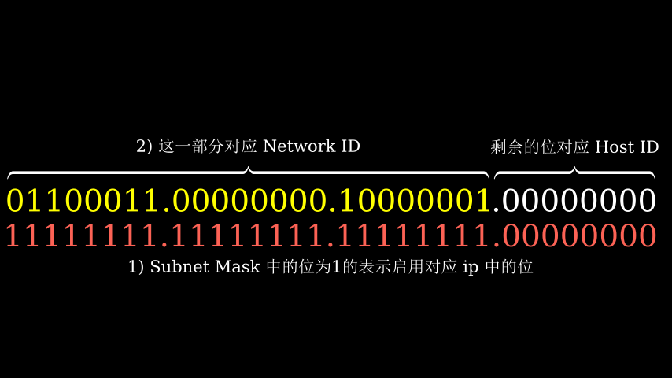

让我困惑的Subnet Mask(子网掩码)
前言：之前一直不太懂 subnet mask(子网掩码)这个家伙的作用，不管是看了别人文章里的比喻还是一些计算后，自己还是很懵。但是其实自己懂了之后，其实关键是这个“东西”的作用到底是什么，这个“东西”到底扮演了什么样的角色，这才是较为重要的，不要一上来就直接进行计算，懂得为什么会去这样做才是重中之重。
首先来声明下 subnet mask的作用：它是区分 network Id（网络号）和 host Id（主机号）的边界。至于怎么来区别我们下面来说：
我们熟知的 ip 主要是由两部分组成: Network ID + Host ID.中文翻译过来是 网络号 和 主机号。
现假设我们的 ip 是 99.0.129.36，subnet mask 是 255.255.255.0
首先我们将 ip 转换为其二进制的形式，对于 subnet mask 也是如此。

得到相对应的二进制编码形式后，有这样一个规则：subnet mask二进制形式中为1的位，则“启用”对应的 ip 的位置，来看下面这张图：

这样我们就得到了二进制形式的 Network ID: 01100011.00000000.10000001，转换为十进制即99.0.129.0，这是网络号。
剩余的位则是 Host ID，有八位。
又因为在网段中有两个保留位置：
- Host ID 全为0时：表示网段号，即 Network ID
- Host ID 全为1时：表示广播地址（这里是99.0.129.255）
因此这个网段可以支持的主机数量为 2^8 - 2 = 254 个。
当我们的网段中有1000台主机时，这个时候就需要给 host id 分配10位了，对应的 network id 有22位，之后就可以得到对应的网络号。
对于 ip 和 subnet mask 还有一种表示方法：如99.0.129.36/24，这里的24表示24个1，即 subnet mask 中1的个数，这种表示方法叫做 CIDR Notation。
注意：subnet mask 中的 1 必须是连续的1，中间不能有0.
subnet mask 可以保证为我们合理划分网段，并且给主机留够足够的ip，可以使浪费达到很小，因为它可以很方便的进行加减位数。
有问题请在 issue 中进行评论吧~